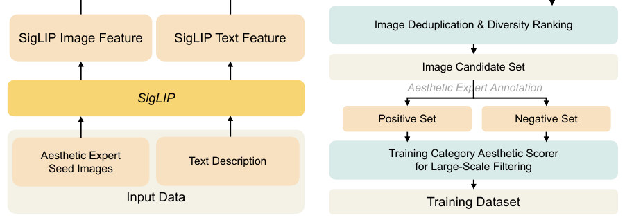
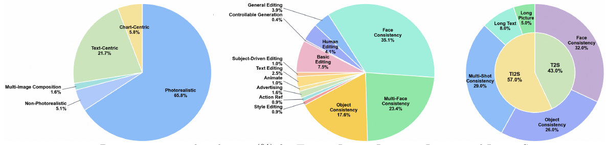
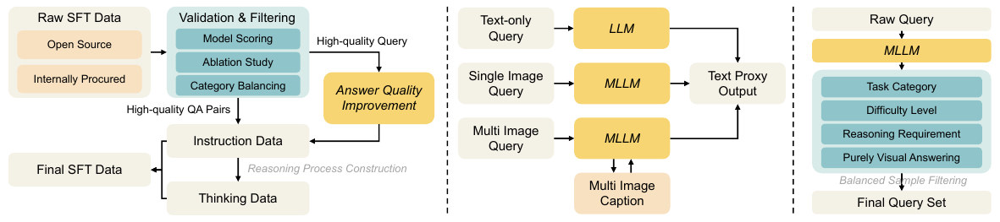
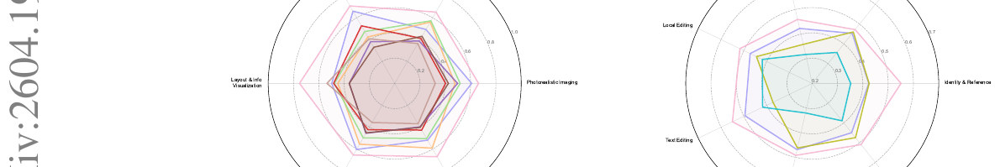

速览
五条要点
理解与生成是一个模型
MLLM 专家与 DiT 专家在每个块内共享注意力；先训理解分支，再用它的注意力权重初始化生成分支§3.1。Planner 用 <imagine> 写稠密描述、用 <size> 推断输出分辨率，交给 Visualizer 出图§3.3。
数据引擎是重头
多种子图检索 + 聚类多样性重排；五类图像算子（特征、美学、AIGC 检测、低层信息、整体画质）；每条样本打分超过 20 个维度，阈值随阶段收紧，最后人工抽检§2.2.1 · §2.2.3。
caption 三种并用
原始网页文本（保留噪声）、多粒度自然语言 caption、按 5 类图像路由到 25 个属性的结构化 JSON caption，并支持按维度增量更新§2.2.2。I2I 的 PE 输出拆成 common / difference 两个字段§3.4。
训练账本公开到超参
生成 PT 713K 步 / 13.27T token，CT 223K 步 / 8.85T，SFT 13K 步 / 0.62T；T2I:I2I 从 7:3 调到 7:2:0.5:0.5（含 T2S/TI2S）表 3。之后 Cascade RL（DPO、ReFL、DenseGRPO、自研 ReFMA）相对 SFT 提升 15%–50%§4.3。
生成评测只有内部人评
作者称整体超过 Seedream 5.0 Lite 与 GPT Image 1.5，落后 Nano Banana Pro，但文字渲染、写实等难项接近；交互编辑和组图 Pass Rate 约 80%§1 · 图 1。没有任何公开生成/编辑基准的数字，样本量与评审人数也未给。
架构：Planner + Visualizer 的统一 Transformer
论文架构图（图 12）不在本页裁图中，下面按 §3.1–3.5 与图 12 的文字层复原，只画原文写明的部分。
相对同类的改动
专家分离 + 共享注意力 §3.1
理解（decoder-only）与生成（DiT）各有专属权重，块内共享注意力做特征对齐；引文指向 Mixture-of-Transformers 与 BAGEL 一路的设计。两支分阶段解耦训练，推理时统一。
编辑条件走「干净 VAE token」 §3.1
输入图除了经 ViT 进理解侧，还以干净 VAE token 进 DiT，时间步设 0 当确定性条件，用来保留结构和细节。
组图跨图双向注意力 §3.1
同一组图的所有视觉 token 之间开 bidirectional attention，作者称用于身份一致和风格连贯（无消融）。
Planner 推断分辨率 §3.3
从 prompt 里的比例、横竖构图、场景描述推断输出尺寸，写成 <size>grid_h*grid_w</size>；多图 I2I 还参考输入图尺寸。所有任务都支持 Think Mode。
三个外围模块
四通道 VAE §3.2
- 2×2 patchify + 8×8 下采样，总压缩 16×16；latent 48 维表 1。编解码器多级残差块堆叠。
- 混合重建损失同时约束可见内容、alpha 结构、透明边界（各项权重原文未披露）。
- 三段训练：256² → 混合分辨率 → 加 4 通道 GAN 判别器，最终适配到 2K；参照 VA-VAE 加语义蒸馏。CT 数据含多语种场景文字、文档、合成排版文字、密集人脸、复杂纹理，作者观察到小字重建能力随之「涌现」。
Prompt Enhancer（PE） §3.4
- 非 CoT 版：基于 Qwen3-VL-2B，约 1 秒，输出 400–600 token；训练数据构造时用过推理，但只学改写结果。
- CoT 版：基于 Qwen3-VL-30B-A3B，先推理再改写，输出约 1,500–2,000 token。
- 一个模型联合覆盖 T2I / I2I / T2S / TI2S：T2S 输出按张数展开的列表；I2I 与 TI2S 输出
common（应保持）与difference（应修改）两字段。 - T2I 下 PE 兼做分类器，只对 7 类 prompt 改写：文字排版、海报与平面设计、信息图与数据可视化、界面/UI、叙事与多格分镜、技术图解、逻辑推理与知识展示。
- 两阶段训练：SFT（T2I 最多，T2S 与 TI2S 相当，I2I 较少）→ GRPO（T2I 最多，其余三类较少且相当）；reward 维度为意图忠实度、描述丰富度、语言准确性。具体条数原文未披露。
Image Refiner §3.5
多图输入/输出时序列长度固定，单图分辨率被压低，所以在 DiT 输出后接 Refiner 提到 2K–4K。修复模式接收图 + 详细 prompt，可修错字、去伪影；高保真模式只改低层细节、不动结构，用于身份敏感场景。训练退化：模糊、噪声、有损压缩，以及「扩散模型前向加噪再去噪」抹细节；再做蒸馏与 RL。
数据：检索 → 算子过滤 → 分类路由 → 结构化 caption → 分阶段调度
原文没有给出图像/样本总数，也没给任何过滤阈值和剔除率。能核对的量化信息只有：表 3 的 token 数与任务配比、图 8 的任务内类别占比、几处上限（9 输入 / 12 输出 / 1:8 / 25 属性 / 20+ 打分维度）。
4.1 生成数据流水线 §2.2.1–2.2.3 · 图 9

4.2 四个有定义的低成本算子 §2.2.1 · 图 10
| 算子 | 怎么算 | 剔除什么 | 阈值 |
|---|---|---|---|
| Compression ratio | 理论未压缩大小（分辨率 × 位深）÷ 实际文件大小 | 原文：比值越低压缩越重 → 细节损失风险 | 原文未披露 |
| Edge pixel variance | 边缘像素方差（熵启发） | 大面积纯色背景、纯色边框 | 原文未披露 |
| bpp | 重编码为 JPEG 后的 bits-per-pixel，作结构复杂度代理 | 低 bpp = 纹理信息少 | 原文未披露 |
| AI score | 专用 AIGC 检测分类器，分数越高越「真实」 | 疑似 AI 生成图 | 原文未披露 |
注意「compression ratio」的方向：原文定义为未压缩大小 / 实际大小，又说「比值越低压缩越重」，两者方向相反（按定义，压缩越重比值应越高）。图 10 只给了各算子的分布刻度与示例图，不是阈值。
4.3 已披露的数据分布 图 8
图 8 是各任务内部的类别占比；跨任务配比见 §5 的表 3。条形数值读自原图标签。
「一致性类 / 显式编辑类」是本页按类名做的分组，不是论文的划分。组图外环 5 类与内环 T2S/TI2S 的对应关系原图未标明，此处不拆。

4.4 已披露的规模
| 项 | 数值 | 来源 |
|---|---|---|
| 生成 PT / CT / SFT token | 13.27T / 8.85T / 0.62T | 表 3 |
| 理解 U-CT / U&M SFT / OPD token | 0.1T / 0.033T / 0.0016T | 表 3 |
| 检索系统聚类中心 | 「Millions」（百万级） | 图 9 |
| 质量打分维度 | 超过 20 个 | §2.2.3 |
| 结构化 caption 属性池 | 25 个独立属性，5 个一级类 | §2.2.2 |
| 任务上限 | I2I ≤ 9 张输入；T2S/TI2S ≤ 12 张输出；比例至 1:8 | §2.2 |
| 图像 / 编辑对 / 组图样本条数 | 原文未披露 | — |
| 数据来源（网页 / 自有 / 合成占比） | 原文未披露（仅提到 raw caption 来自网页元数据） | §2.2.2 |
| 编辑对的构造方式（专家模型合成、真实对等） | 原文未披露 | — |
4.5 分类体系与 caption §2.2.2 · 图 11
两层分类。所有训练图先按语义主题、图像属性、风格、构图模式、生成难度做结构化分类以控制采样；I2I 与 TI2S 再加一层编辑任务分层标签：参考/编辑范式 → 编辑目标 → 编辑类型，用于组织复杂编辑任务、缓解长尾不平衡。
① Raw caption
来源环境自带的元数据：用户标签、HTML alt、网页标题、周边锚文本或正文片段。刻意保留网页噪声和弱监督信号。
② 自然语言 caption
多套提示模板 + 先进 MLLM，从一句话到多句长段落的多粒度描述。
③ 结构化 JSON caption
先把图严格分到 5 类，再按类映射属性子集；属性池共 25 个；按维度增量更新；最后由微调过的 MLLM 改写成自然语言。
| 一级类（图 11） | 类专属属性（图 11 列出） |
|---|---|
| Photorealistic | Overall · People · Objects · Background · Layout · Composition · Perspective · Color · Lighting · IP · Artist · Application · Shot Type · Depth of Field |
| Non-Photorealistic | Overall · People · Objects · Background · Layout · Composition · Perspective · Color · Style · IP · Artist |
| Text-Centric | Overall · People · Objects · Background · Layout · Composition · Color · Style · Application · Text · IP |
| Chart-Centric | Overall · Layout · Text · Chart Type · Axis · Data Series Style · Trends and Patterns · Legend · Comments · Data Point Values |
| Multi-Image Composition | Overall · Composition · Style · Application · Clarity · Number of Sub-Images · Sub-Image Content |
按图 11 文字层去重得到 26 个属性名推算，正文写 25 个；差异可能来自文字层切分（如 Data Series Style），原文未说明。每个属性的取值格式与 JSON schema 原文未给。
4.6 阶段化数据调度 §2.2.3
全程
- 适度上调「需要更久训练」的任务采样，如文字生成、身份保持。
- 构造多套详细 prompt 加强图文对齐。
PT
- 用检索系统拉大规模数据，求语义覆盖。
- 只用基线质量过滤。
CT / SFT
- MLLM 高精度打标，针对风格多样性、概念渲染、场景文字、视觉美学。
- 长尾类别再平衡；美学与清晰度阈值显著收紧。
SFT 收尾
- 只留通过严格质量与美学过滤的样本。
- 更侧重人工过滤或高质量模型挑选的精选子集§4.2.3。
4.7 理解侧数据 §2.1 · 图 7

<think> 推理数据；中，按纯文本 / 单图 / 多图三种输入构造 text-proxy（<BOI> 占位 + <imagine> 详细视觉描述）；右，MLLM 给真实 query 标任务类别、难度、是否需推理、是否纯视觉问答，再按人工规则均衡采样。来源：论文图 7text-proxy 三类构造细节 §2.1
- 纯文本输入（类别标签、关键词）：直接当 user query，由高质量 LLM 写 text proxy。
- 单图输入：图喂给 MLLM，同时生成 user query 与 text proxy。
- 多张相关图：先逐张写描述，再把图 + 描述一起喂回 MLLM 组织成连贯的图文交错叙事，最后做逻辑与风格一致性精修。
训练配方
两条线：先训理解分支（起点为 post-training 之前的 Qwen-VL base），再训生成分支，最后 RLHF 与步数蒸馏§4。表 3 给全了步数、token、分辨率、batch、配比与主要超参。
Understanding CT
- 步数
- 46K
- token
- 0.1T
- LR
- 1×10⁻⁵
- 配比
- T2T : I2T = 2 : 7
instruct + thinking 样本混训，纯文本数据防退化，并为 thinking 模式冷启动。
Understanding & Multi-task SFT
- 步数
- 10K
- token
- 0.033T
- LR
- 7×10⁻⁶
- 配比
- 1 : 1 : 2 : 2 : 4
T2T / I2T / T2I / I2I / 交错生成。用 text-proxy 让 MLLM 学会写 DiT 能吃的稠密 prompt；加 item-level loss 区分任务类型。
On-policy 多教师蒸馏
- 步数
- 0.4K
- token
- 0.0016T
- LR
- 1×10⁻⁶
- 批量
- 0.256K
MLLM 多维分类真实 query 以模拟用户意图；按输入类别挑专长教师，减少意图混淆与生成类任务的无谓拒答。
Pre-training
- 步数
- 713K
- token
- 13.27T
- 分辨率
- 192/320/640
- 配比
- T2I : I2I = 7 : 3
Continual PT
- 步数
- 223K
- token
- 8.85T
- 分辨率
- 512–2048
- 配比
- 7 : 2 : 0.5 : 0.5
SFT
- 步数
- 13K
- token
- 0.62T
- 分辨率
- 512–2048
- LR
- 3×10⁻⁵
Cascade RL
DPO → ReFL → DenseGRPO → ReFMA 等按维度级联；RL prompt 与 SFT prompt 互斥。各算法顺序与步数原文未披露。
步数蒸馏
轨迹蒸馏 + 分布匹配蒸馏，多阶段渐进；加速 >8×。目标步数原文未披露。
G1–G3 下方细条为该阶段 token 占生成总 token（22.74T）的比例：58.4% / 38.9% / 2.7%推算。CT 配比为 T2I : I2I : T2S : TI2S。Cascade RL 中列出的算法顺序只是原文列举顺序，不代表执行顺序。
表 3 全部配置 表 3
| 配置 | U-CT | U&M SFT | OPD | PT | CT | SFT |
|---|---|---|---|---|---|---|
| Steps (K) | 46 | 10 | 0.4 | 713 | 223 | 13 |
| Tokens (T) | 0.1 | 0.033 | 0.0016 | 13.27 | 8.85 | 0.62 |
| Resolution | - | - | - | 192/320/640 | 512–2048 | 512–2048 |
| Batch Size (K) | 1 | 1.6 | 0.256 | 50/23/12 | 5 | 4 |
| 数据类型 | T2T/I2T | Multi-task* | - | T2I/I2I | T2I/I2I/T2S/TI2S | |
| 配比 | 2:7 | 1:1:2:2:4 | - | 7:3 | 7:2:0.5:0.5 | |
| Optimizer | AdamW | AdamW | AdamW | AdamW | ||
| Weight Decay | 0.05 | 0.1 | 0.01 | 0.02 | ||
| Grad. Norm Clip | 1.0 | 1.0 | 0.2 | 0.5 | ||
| Uncond. Dropout | - | - | - | 0.05 | ||
| Learning Rate | 1×10⁻⁵ | 7×10⁻⁶ | 1×10⁻⁶ | 5×10⁻⁵ | 5×10⁻⁵ | 3×10⁻⁵ |
| EMA Ratio | - | 0.9998 | - | 0.9999 | 0.9999 | 0.9998 |
* Multi-task = T2T / I2T / T2I / I2I / Interleaved generation。PT 的 batch 50/23/12K 对应 192/320/640 三档分辨率（按列序对应，原文未逐一说明）。调度器、warmup、时间步采样分布、CFG scale、GPU 类型与时长原文未披露。
RLHF：Cascade RL §4.3 · 图 16
RL 数据
- RL prompt 与 SFT prompt 互斥，防止靠记忆拿高 reward。
- MLLM 过滤并分类，便于按领域建集。
- 流水线：配对构造 → 美学专家训练与标注 → 质量监控 → 数据检索。
Reward 模型
- 发现留出验证集会「偏好过拟合」，不能可靠反映 RM 对 RL 的指导效果。
- 改用来源更多样的 reward benchmark 选 RM，并在其上消融骨干结构、规模、数据量、损失函数（结果未给）。
Cascade RL
- 集成 DPO、ReFL、DenseGRPO 与自研 ReFMA（flow matching anchor，平衡不同噪声水平的优化目标并利用 RM 梯度）。
- 级联逐维提升：写实、结构、文字、美学；编辑侧提升一致性与和谐度（图 16 列出 Realism、Structure、Text、Aesthetics、Consistency、Harmony）。
- 相对 SFT 的 Win Score 提升 15%–50%§4.3.4。
评测
三块：生成与编辑只有图 1 的内部人评雷达图（无数值表）；VAE 重建（表 1–2）；理解基准（表 4）。没有 GenEval、DPG、GEdit、ImgEdit 等公开生成/编辑基准。
6.1 生成与编辑人评 图 1 · §1 · §5.2.1
| 任务 | 指标 | 对比对象（据图 1 文字层） | 原文结论 |
|---|---|---|---|
| Text-to-Image | Win Score | Nano Banana Pro、GPT Image 1.5、Seedream 4.5、Seedream 5.0 Lite、Qwen-Image-2.0-Pro、Kling Image 3.0 Omni、Z-Image Turbo（多数标 2K） | 整体超过 Seedream 5.0 Lite 与 GPT Image 1.5；落后 Nano Banana Pro，但文字渲染、写实接近 |
| General Image Editing | Win Score | Nano Banana Pro、Seedream 5.0 Lite、Qwen-Image-2.0-Pro | 同上（未分任务单独陈述） |
| Interactive Image Editing | Pass Rate | 仅 Wan2.7-Image | 约 80% |
| Image Series Generation | Pass Rate | 仅 Wan2.7-Image | 约 80% |
Win Score = (Wins + 0.5 × BothGood) / Total图 1 题注。雷达图各轴数值、prompt 数、评审人数、是否盲评、平局/双差的处理原文未披露。对比对象按图 1 抽取文本归属，以原图为准；GPT Image 1.5 只出现在 T2I 图例，因此「超过 GPT Image 1.5」只能对应 T2I。
图 1 各雷达轴（文字层可辨认） 图 1
- T2I：Text Rendering · Art & Design · Photorealistic Imaging · Complex Semantics & Reasoning · World Knowledge · Layout & Info Visualization
- 通用编辑：Local Editing · Advanced Editing · Multi-image Editing · Identity & Reference · Object & Scene Editing · Style & Lighting Editing · Text Editing
- 交互编辑：Content Generation & Replacement · Spatial Transformation · Text Editing · Shape Operations · Advanced & General
- 组图：13 个场景，如 E-commerce Design、Film Storyboarding、PPT Presentations、Education & Academia 等

6.2 VAE 重建 表 1 · 表 2
表 1、表 2 全表 5,000 张 RGB @512p · 500 张 RGBA @1080p
| Method（RGB） | 下采样 | Latent | PSNR↑ | SSIM↑ | LPIPS↓ |
|---|---|---|---|---|---|
| FLUX.1 VAE | 8×8 | 16 | 34.769 | 0.958 | 0.009 |
| SD3.5 VAE | 8×8 | 16 | 33.000 | 0.942 | 0.012 |
| Qwen-Image-Layered VAE | 8×8 | 16 | 33.447 | 0.946 | 0.020 |
| HunyuanImage-3.0 VAE | 16×16 | 32 | 33.735 | 0.939 | 0.022 |
| Wan2.2 VAE | 16×16 | 48 | 33.708 | 0.946 | 0.014 |
| Wan-Image VAE | 16×16 | 48 | 35.429 | 0.958 | 0.010 |
| Method（RGBA） | 下采样 | Latent | PSNR↑ | SSIM↑ | LPIPS↓ |
|---|---|---|---|---|---|
| AlphaVAE (FLUX.1) | 8×8 | 16 | 36.797 | 0.970 | 0.035 |
| Qwen-Image-Layered VAE | 8×8 | 16 | 37.884 | 0.971 | 0.018 |
| Wan-Image VAE | 16×16 | 48 | 38.274 | 0.970 | 0.018 |
测试集来源原文未披露。原文说表中最佳加粗，纯文本无法还原加粗位置，这里按数值重新标注。
6.3 理解基准 表 4 · §5.1
表 4 节选（理解专用模型 + Ours） “–” 为相应报告缺失
| Model | MMMU | MMStar | MathVista | HalluBench | MMBench | OCRBench | AI2D | Avg | AIME | GPQA | HLE | LCBv6 | Avg |
|---|---|---|---|---|---|---|---|---|---|---|---|---|---|
| Qwen2-VL-7B | 54.1 | 60.7 | 58.2 | 50.6 | 80.7 | 86.6 | 83.0 | 67.7 | – | 30.3 | 2.8 | 9.7 | 10.7 |
| Qwen2.5-VL-7B | 58.6 | 63.9 | 68.2 | 52.9 | 82.6 | 86.4 | 83.9 | 70.9 | – | 34.3 | 2.7 | 14.9 | 13.0 |
| Ovis2-8B | 57.4 | 64.6 | 71.8 | 56.3 | 83.6 | 89.1 | 86.6 | 72.8 | – | 35.9 | 4.2 | 20.0 | 15.0 |
| InternVL3-8B | 62.7 | 68.2 | 71.6 | 49.9 | 81.7 | 88.0 | 85.2 | 72.5 | – | 36.4 | 4.4 | 16.5 | 14.3 |
| InternVL2.5-8B | 56.2 | 62.8 | 64.5 | 50.1 | 83.2 | 82.2 | 84.5 | 69.1 | 3.3 | 28.3 | 3.3 | 10.3 | 11.3 |
| Kimi-VL-2506 (Thinking) | 64.0 | 70.4 | 80.1 | 59.8 | 84.4 | 86.9 | 81.9 | 75.4 | 33.3 | 45.5 | 2.3 | 29.7 | 27.7 |
| Ours Instruct | 58.0 | 68.0 | 73.5 | 55.4 | 82.7 | 84.8 | 85.1 | 72.5 | 30.0 | 44.8 | 3.4 | 32.6 | 27.7 |
| Ours Thinking | 67.4 | 72.8 | 82.3 | 57.7 | 83.5 | 84.1 | 86.1 | 76.3 | 33.3 | 47.0 | 3.9 | 31.4 | 28.9 |
表头在 PDF 中为竖排乱码；列序按正文列举顺序，并用 Qwen2.5-VL-7B 七项均值 = 70.9 等行内平均反推核对推算。文本理解 Avg 对缺失的 AIME 按 0 计入（如 Qwen2.5-VL-7B：(34.3+2.7+14.9)/4 = 13.0）推算。
6.4 其他结果
Cascade RL vs SFT §4.3.4 · 图 16 右
各场景 Win Score 相对提升 15%–50%。按场景的具体数值只在图中，本页未取得。
蒸馏 §4.4 · 图 19
推理加速 >8×，「保持生成保真度」只有图 19 的定性对比。
PE / Refiner / 阶段演进 图 14 · 15 · 29 · 31
都只有定性对比图：非 CoT PE vs CoT PE、有无 Refiner、PT→CT→SFT、有无 PE。
竞品定性对比 图 27 · 28
T2I / I2I 对 GPT Image 1.5、Qwen-Image-2.0-Pro、Seedream 5.0 Lite、Nano Banana Pro；TI2S 对 Doubao、Gemini。单例展示。
新在哪
MoT 式专家分离、Rectified Flow、QK-Norm、AdaLN、DPO/ReFL/GRPO、DMD 类蒸馏都是已有做法，不算在内。
原生 RGBA 的 16×16 高压缩 VAE
同一个 4 通道 VAE 同时服务 RGB 生成与透明图生成，16×16 / 48 维下 RGB PSNR 35.429、RGBA PSNR 38.274，均为表内最高。
可核对：§3.2、表 1–2、图 13。LPIPS / SSIM 并非全部最佳。
结构化 JSON caption：先路由再按类取属性
不是一个通用 schema 套所有图，而是 5 个一级类各自映射属性子集（如图表类有 Axis、Legend、Data Point Values），并支持按维度增量修订，最后用微调 MLLM 改写成自然语言。
可核对：§2.2.2、图 11。无「有/无结构化 caption」的对照。
Planner 端的 <size> 与 <imagine>
统一模型自己推断输出分辨率并写稠密视觉描述，交错生成时以 <BOI> 触发 Visualizer，Planner 再接着写文。
可核对：§3.3；与团队的 Wan-Weaver 一脉相承。
PE 输出 common / difference，并兼做路由
I2I 与 TI2S 的改写显式拆分「保持什么」与「改什么」；T2I 下只对 7 类 prompt 启用改写。
可核对：§3.4。没有字段拆分的消融。
用 reward benchmark 而不是留出集选 RM，及自研 ReFMA
作者明确指出留出验证集会让 RM「偏好过拟合」，改用多源 benchmark 选型；ReFMA 用 flow matching anchor 平衡不同噪声水平的优化。
可核对：§4.3.2–4.3.3。benchmark 组成、消融结果、ReFMA 公式都未给。
对图像编辑数据 / 评测 / caption 的启示
每条先写论文怎么做（带出处），再写一条可迁移做法。「迁移」都是本页的建议，不是论文内容。
C1先分类、再按类填属性
论文：图先路由到写实 / 非写实 / 文字 / 图表 / 多图拼接 5 类，各类只标对应属性，属性池共 25 个§2.2.2 · 图 11。
迁移建议，不是论文内容：编辑样本的源图也先分类再 caption：文字类必须有逐行 Text 字段，图表类必须有 Data Point Values。编辑指令里引用的对象必须能在源图 caption 的某个属性里找到，找不到就打回。
C2指令拆成 common / difference
论文：I2I / TI2S 的 PE 输出两个字段，common 写应保持的主体与风格，difference 写要改的方面§3.4。
迁移建议，不是论文内容：训练 caption 的 JSON 里固定 preserve 与 edit 两组；评测时 preserve 每条对应一个一致性检查项，edit 每条对应一个执行检查项，两组分开报分。
C3按维度改 caption，不整段重写
论文：结构化 caption 「及时更新」，补缺失维度、删错误维度、其余维度原样保留§2.2.2。
迁移建议，不是论文内容：caption 按字段存版本号；发现某类错误（如左右方位写反）时只重跑对应字段，并记录哪一版字段进了哪次训练，方便把效果变化归因到具体字段。
C4保留一份「脏」的原始文本
论文：与 MLLM caption 并用 raw caption（alt、标题、标签、上下文），刻意保留网页噪声与弱监督§2.2.2。
迁移建议，不是论文内容：编辑指令除了规范化版本，再按比例混入短、口语、错字、只说意图的用户式写法；评测集同样分「规范指令 / 用户口吻」两桶报分。
D1编辑任务三层标签
论文：I2I / TI2S 按「参考或编辑范式 → 编辑目标 → 编辑类型」分层打标，用于组织复杂任务、缓解长尾§2.2.2。
迁移建议，不是论文内容：每条编辑对至少带这三层标签，采样器按叶子节点配额而不是按原始频率采；评测集按同一棵树分层抽样，保证每个叶子都有样本。
D2先核对自己的 I2I 配比
论文：I2I 中 Face / Multi-Face / Object Consistency 合计 76.1%，Basic / Human / General / Text 等显式编辑类约 19.9%图 8推算。
迁移建议，不是论文内容：如果目标是「指令编辑」而非「参考生成」，不要照抄这个配比；把参考一致性类与显式编辑类分成两个桶，单独调两桶的配比，对照编辑指标看。
D3多张种子图定义一个类别
论文：难以用文字描述的类别（美学、构图逻辑）用多张种子图共同检索，专家标正/负集，训练类别专属美学打分器§2.2.1 · 图 9。
迁移建议，不是论文内容：为难找的编辑源图（如复杂透明物体、密排小字海报）各挑一组种子图做多图检索；正/负集同时留下来，当这一类源图的自动准入分类器。
D4便宜算子放在 VLM 之前
论文：压缩比、边缘像素方差、JPEG 重编码 bpp、AIGC 检测分，加水印与油腻纹理检测§2.2.1。
迁移建议，不是论文内容：对编辑对的源图和目标图都跑一遍；尤其目标图由模型合成时，AI score 与「油腻纹理」分的差值（目标 − 源）可当作「编辑引入了合成感」的信号，记录下来按分层采样，而不是一刀切。
D5阈值按阶段收紧，再人工抽检
论文：PT 只用基线过滤保规模，CT / SFT 显著收紧美学与清晰度阈值，自动过滤后随机人工抽检§2.2.3。
迁移建议，不是论文内容：同一批编辑对存一份打分而非只存过/不过，不同阶段用不同阈值切片；每次切片随机抽 N 条人工看，记录误杀与漏放率，作为阈值调整依据。
D6RL prompt 与 SFT prompt 互斥
论文：RL 数据集与 SFT 数据集的 prompt 互不重叠，防止靠记忆拿高 reward§4.3.1。
迁移建议，不是论文内容：编辑 RL 阶段对源图也做去重（不只是指令文本），避免同一源图换个说法出现在两个阶段；评测集再与两者都去重。
E1Win Score 把「都好」算半分
论文：Win Score = (Wins + 0.5 × BothGood) / Total；交互编辑与组图改用 Pass Rate图 1。
迁移建议，不是论文内容：GSB 报告里把 BothGood 与 BothBad 分开列，再给 Win Score；同时附 prompt 数、评审人数与置信区间——这些正是论文缺的。
E2用多源 benchmark 选 RM，不靠留出集
论文：留出验证集导致 RM 偏好过拟合，改建来源更多样的 reward benchmark 来选骨干、规模、数据量、损失§4.3.2。
迁移建议，不是论文内容：编辑 RM 的验证集换数据源（不同标注批次、不同源图分布、不同生成模型产出的候选），并与 RL 后人评结果做相关性检查，相关性低的 RM 不上线。
E3按编辑类别画轴，而不是只给总分
论文：通用编辑分 Local / Advanced / Multi-image / Identity & Reference / Object & Scene / Style & Lighting / Text 等轴；交互编辑另分 5 轴图 1。
迁移建议，不是论文内容：评测集分类轴与 D1 的训练标签树对齐，这样某一轴掉分时能直接回查该叶子节点的训练数据量与质量。
E4先测 VAE 的小字上限
论文：在文档细粒度文字区域对比各 VAE 重建（图 13），并称 CT 加入文字、人脸、纹理数据后小字重建能力出现§3.2。
迁移建议，不是论文内容：文字编辑评测前，先把评测图过一遍「编码-解码」，用 OCR 比对重建前后；VAE 重建都认不出的字号区间，从文字编辑分数里单独剔出或分桶，避免把 VAE 上限算成编辑能力。
E5评测 query 先打属性再均衡
论文：MLLM 给真实 query 标任务类别、难度、是否需推理、是否纯视觉问答，再按人工规则均衡成最终 query 集§2.1。
迁移建议，不是论文内容：线上真实编辑请求同样打这四类属性后均衡抽样做评测集，并保留原始分布权重，能同时报「均衡分」和「按线上分布加权分」。
局限与存疑
- 生成 / 编辑没有可复现的定量结果。全部结论来自图 1 的内部人评雷达，无数值表、无 prompt 数与评审人数、无公开基准；交互编辑与组图的约 80% Pass Rate 没有对比对象图 1 · §1。
- 几乎没有消融。结构化 caption、跨图双向注意力、干净 VAE token、PE 字段拆分、Cascade RL 各算法、ReFMA、RM 选型都没有对照数字；RL 只给了 15%–50% 的区间§4.3.4。
- 数据规模与来源未披露。无图像数、编辑对数、来源占比、过滤阈值与剔除率；编辑对如何构造（专家模型合成、真实对等）完全没写。图 8 只给任务内占比。
- 参数量、开源与许可证均未写。只给 Model Card 名 Wan2.7-Image 与在线体验链接；「moderate parameter scale」没有数字§4.4。
- VAE 表述略强于表格。正文称 RGB「最佳整体表现」，但 LPIPS FLUX.1 VAE 0.009 更低；RGBA SSIM Qwen-Image-Layered 0.971 更高表 1–2。且对比 VAE latent 维度不同（48 vs 16），不是同等容量比较。
- 理解评测的正文与表格不一致。§5.1 说覆盖 Image 与 Video Understanding，但表 4 是 Image 与 Text Understanding，没有视频基准。
- 文本理解平均分口径偏有利。理解专用模型多数缺 AIME，Avg 把缺失按 0 计入推算，「显著提升」部分来自这一口径；对 Kimi-VL Thinking 实际为 28.9 vs 27.7表 4。
- 「超过 GPT Image 1.5」的范围。按图 1 文字层，GPT Image 1.5 只出现在 T2I 对比中，编辑侧对比的是 Nano Banana Pro、Seedream 5.0 Lite、Qwen-Image-2.0-Pro。
- 算子定义有一处方向矛盾。compression ratio 定义为「未压缩大小 / 实际大小」，却说「比值越低压缩越重」§2.2.1。
- 效率数字只有倍数。蒸馏「>8×」与 Refiner「4K 不牺牲速度」都没有 NFE、延迟或硬件信息§4.4 · §1。
- 日期口径。arXiv v1 为 2026-04-21；本页对照的 PDF 为 v2（arXiv 戳 2026-04-23），正文 Date 写 2026-04-27。
图表索引
| 编号 | 内容 | 本页位置 |
|---|---|---|
| 图 1 | 四类任务人评雷达（Win Score / Pass Rate）；本页仅有首页局部裁图 | 评测 6.1 |
| 图 2 | 文生图能力示例 | 页首 |
| 图 3–6 | I2I、组图、极端比例/人像/调色板/透明通道、超长文字示例 | 未收录 |
| 图 7 | 理解数据构建流程 | 数据 4.7 |
| 图 8 | T2I / I2I / 组图类别占比 | 数据 4.3 |
| 图 9 | 多模态检索系统（本页裁图为下半部分） | 数据 4.1 |
| 图 10 | 代表性过滤算子的分布与示例 | 未收录（定义见数据 4.2） |
| 图 11 | 结构化数据分类体系 | 未收录（转写见数据 4.5） |
| 图 12 | Wan-Image 架构 | 未收录（示意见架构） |
| 图 13 | VAE 小字重建对比 | 未收录 |
| 图 14 / 31 | PE 变体对比；有无 PE | 未收录 |
| 图 15 | 有无 Refiner | 未收录 |
| 图 16 | RLHF 框架；RL 相对 SFT 的 Win Score 提升 | 未收录（要点见训练） |
| 图 17 / 18 / 30 | SFT vs Cascade RL（T2I / I2I） | 未收录 |
| 图 19 | teacher vs 蒸馏 student | 未收录 |
| 图 20–26 | 更多 T2I / I2I / 交互编辑 / 组图 / 人像等示例 | 未收录 |
| 图 27 / 28 | 与竞品的 T2I、I2I、TI2S 定性对比 | 未收录 |
| 图 29 | PT / CT / SFT 阶段演进 | 未收录 |
| 表 1 / 表 2 | RGB / RGBA VAE 重建 | 评测 6.2 |
| 表 3 | 理解与生成各阶段训练配置 | 训练配方 |
| 表 4 | 理解基准对比 | 评测 6.3 |